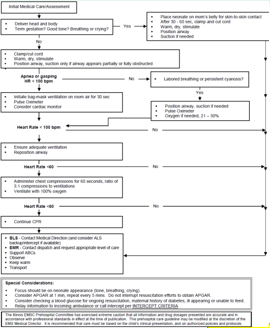
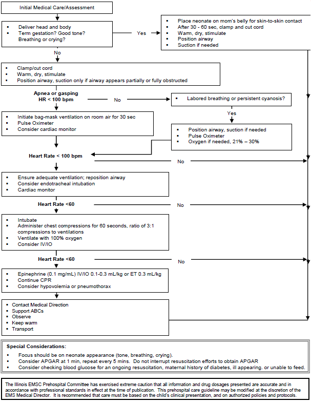

| History | Signs and Symptoms | Differential |
|---|---|---|
|
• Due date and gestational age • Multiple gestation (twins, etc.) • Meconium / Delivery difficulties • Congenital disease • Medications (maternal) • Maternal risk factors such as substance abuse or smoking |
• Respiratory distress • Peripheral cyanosis or mottling (normal) • Central cyanosis (abnormal) • Altered level of responsiveness • Bradycardia |
• Airway failure -Secretions -Respiratory drive • Infection • Maternal medication effect • Hypovolemia, hypoglycemia, hypothermia • Congenital heart disease |


PEARLS
• Because of the increased potential to induce bradycardia, routine
suctioning of newborn infants is no longer recommended. However,
obvious signs of airway compromise from secretions is still an
indication to perform suctioning of the airway.
• Newborn infants are prone to hypothermia which may lead to
hypoglycemia, hypoxia and lethargy. Aggressive warming techniques
should be initiated including drying, swaddling and warm blankets
covering body and head.
• Raise temperature in ambulance patient compartment.
• Approximately 10% of newly born infants require some assistance to
begin breathing.
• Deliveries complicated by maternal bleeding (placenta previa, vas
previa, or placental abruption) place the infant at risk for
hypovolemia secondary to blood loss.
• Low birth weight infants are at high risk for hypothermia due to
heat loss.
• If pulse oximetry is used as an adjunct, the preferred placement of
the probe is the right arm, preferably wrist or medial surface of the
palm. Normalization of blood oxygen levels (SaO2 85-95%) will not be
achieved until approximately 10 minutes following birth.
• Both hypoxia and excess oxygen administration can result in harm to
the infant. If prolonged oxygen use is required, titrate to maintain
an oxygen saturation of 85-95%.
• While not ideal, a larger facemask than indicated for patient size
may be used to provide bag-valve-mask ventilation if an appropriately
sized mask is not available - avoid pressure over the eyes as this may
result in bradycardia.
• Increase in heart rate is the most reliable indicator of effective
resuscitative efforts.
• A multiple gestation delivery may require additional resources
and/or providers.
• During transport, neonate and the mother appropriately secured.
| KEY DOCUMENTATION ELEMENTS | PERTINENT ASSESSMENT FINDINGS |
|---|---|
|
• Document full vital signs and physical findings • APGAR score • Historical elements -Prenatal complications -Delivery complications -Date and time of birth -Estimated gestational age |
• If there is any doubt as to viability, resuscitation efforts
should be initiated • Acrocyanosis, a blue discoloration of the distal extremities, is a common finding in the newly born infant transitioning to extrauterine life—this must be differentiated from central cyanosis |
| QUALITY METRICS |
|
• Time to initiation of interventions • Use of oxygen during resuscitation • Number of advanced airway attempts |